Introduction
Apache Hadoop is an open source framework that is used to efficiently store and process large datasets ranging in size from gigabytes to petabytes of data. Instead of using one large computer to store and process the data, Hadoop allows clustering multiple computers to analyze massive datasets in parallel more quickly. In this setup, we will take a single namenode and three datanode.
Pre-Requisites
We will need an AWS account (here I will be using the Sandbox Environment of the AWS Academy). For the terminal access, we will be using MobaXterm, an application that provides X-Server capability for the Microsoft Windows operating system with SSH client and more. The shell environment can be downloaded here.
Before we start
In this article, many pieces of information such as public keys, private keys, Domain Names, and IP addresses are exposed. Different consequences must be considered before exposing these details. This article is solely based on educational purposes and the Instance created during this phase has been deleted.
AWS EC2 Startup
We start the Sandbox environment by clicking on the ‘Start Lab’. Also, we need to note that being the free tier, we are restricted to use the environment for a few hours, and also there are certain restrictions to use the ‘paid’ type of Instances.
The main aim is to create a single namenode and three datanode. For this setup, we will initially create an Instance and set up the instance with common configuration (common configuration meaning all the configurations that are the same for namenode and datanode). Then we will replicate the instance (mirror it for 3) and finally set up individual instances.
Creating the Instance
To create an Instance we use the service EC2 and press launch instance.
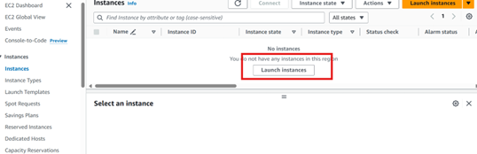And use the following configuration:
- Name: hadoop
- Application and OS Image: ubuntu (24.04)
- Instance Type: t2.micro (we choose t2.micro since that is only available for the free tier. If you have a need for a high-memory or high-cpu instance, you can select one of those.)
- Keypair: Click ‘Create a new key pair’ and give it a name. Once downloaded, select the key generated.
Note: To connect to the instance with the MobaXterm securely, we will need to generate a key pair. The key pair consists of primary and secondary keys. To generate a key pair click on ‘Generate a new key pair’ it will create a dialogue box of where to save it, give the key pair the name and save it. For this, I will be using the name hadoop and saving it into the default Downloads folder. Keep all the other configurations the same and launch the instance.
Setting Up Instance
Once the instances are up and running, it is time to set them up for our purpose. This includes the following:
- Install java.
- Install and Setup Hadoop.
- Configure HDFS and more
Before proceeding further, we will need to copy the Public DNS of the created instance. You can find it under the Instance summary tab.
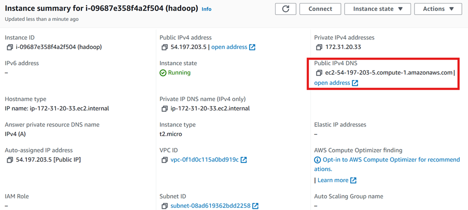Accessing the Instance with Shell access
In the MobaXterm, change the home directory to where your key pair is downloaded.
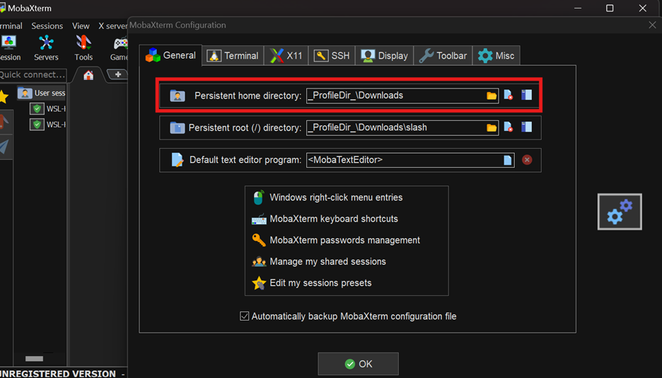Then in the local terminal, you can connect to the instance with SSH using the following command:
ssh -i "hadoop.pem" ubuntu@ec2-54-197-203-5.compute-1.amazonaws.comThen the terminal will be displayed something like this: 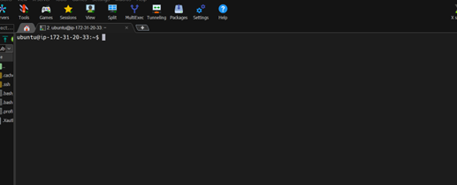
And you will be accessing as an ubuntu user.
Common Configuration
In the following section, we will discuss the common configuration to perform for both the namenode and the datanode.
Update the Instance
sudo apt-get update && sudo apt-get -y dist-upgradeReboot the instance
Reboot from the EC2 service. 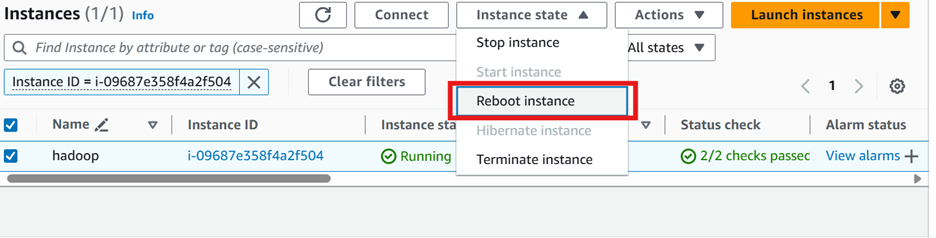
Note: you will need to connect with ssh once again after the reboot is performed.
Install JAVA
sudo apt-get -y install openjdk-8-jdk-headlessInstall Apache Hadoop
Install Apache Hadoop 2.7.3 on the instances. Install it under the server directory. Link to download can be found in the archive section here.
mkdir server
cd server
wget https://archive.apache.org/dist/hadoop/common/hadoop-2.7.3/hadoop-2.7.3.tar.gz
tar xvzf hadoop-2.7.3.tar.gzView the extracted file using ls command
Setup JAVA_Home
nano cd ~/server/hadoop-2.7.3/etc/hadoop/hadoop-env.shChange the default with:
export JAVA_HOME=/usr/lib/jvm/java-8-openjdk-amd64Note: There are various ways to set up the environment variables. You can follow any practice you are comfortable with. Also, you can view this link for the generally practiced method to set up Hadoop Environment.
Update core_site.xml
The xml file /server/hadoop-2.7.3/etc/hadoop/core-site.xml after the configuration should look like this:
<configuration>
<property>
<name>fs.defaultFS</name>
<value><nnode>:9000</value>
</property>
</configuration>Here <nnode> is the public DNS (or ec2-54-197-203-5.compute-1.amazonaws.com in my case).
Create Data dir
HDFS needs the data directory to be present on each node: 1 name node and 3 data nodes. Create this directory as shown and change ownership to user ubuntu.
sudo mkdir -p /usr/local/hadoop/hdfs/data
sudo chown -R ubuntu:ubuntu /usr/local/hadoop/hdfs/dataSetup SSH
We need password-less SSH between the name nodes and the data nodes. Let us create a public-private key pair for this purpose on this instance.
ssh-keygenUse the default (/home/ubuntu/.ssh/id_ed25519) for the key location and hit enter for an empty passphrase.
Note: your key can be different like id_rsa. For that, you can view the files in .ssh folder.
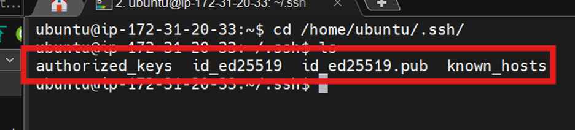Then copy the pub keys from id_ed25519.pub and append it to the authorized_keys
cat id_rsa.pub >> ~/.ssh/authorized_keysThis is just for educational purposes, you are not advised to expose your private and public keys.
To verify, enter ssh localhost. Then you can see something like this or else you will get an error.
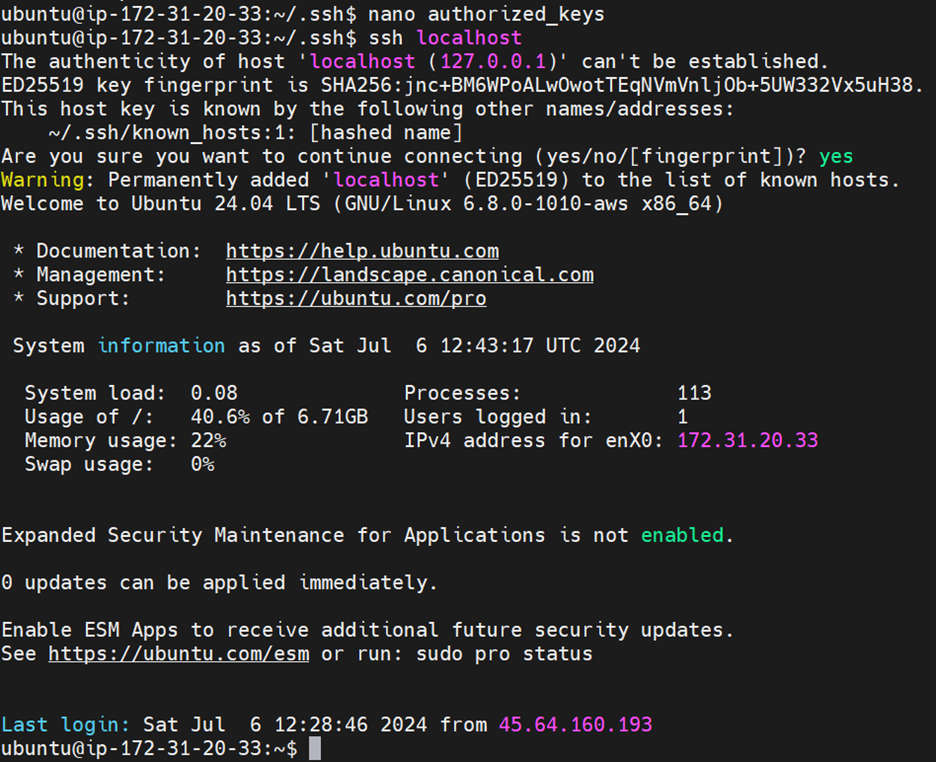
Setup HDFS Properties
Edit the following file: /server/hadoop-2.7.3/etc/hadoop/hdfs-site.xml so that the final configuration should look like this:
<configuration>
<property>
<name>dfs.replication</name>
<value>3</value>
</property>
<property>
<name>dfs.datanode.data.dir</name>
<value>file:///usr/local/hadoop/hdfs/data/datanode</value>
</property>
</configuration>Copy and Mirror the Instance
Now that our common setup is ready, we can create a mirror for our instance to use as a data node. For this, stop the instance. After the instance is stopped, the EC2 console will show the option for AMI.
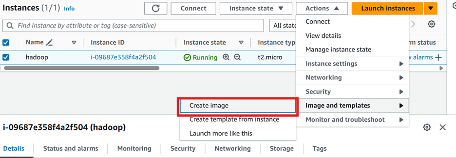Click the instance created. Then click on the image and create an image option. Give the instance an Image name. Then you can view the image created in the AMI section. 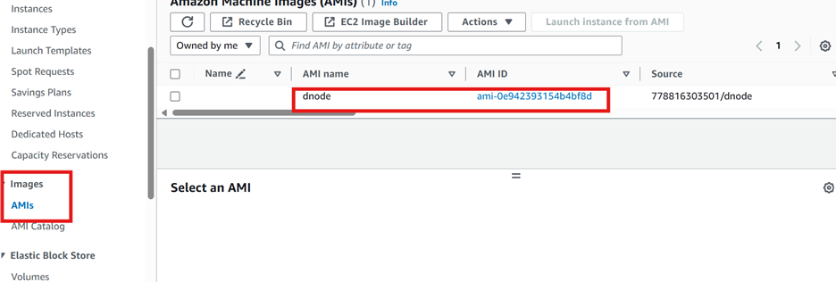 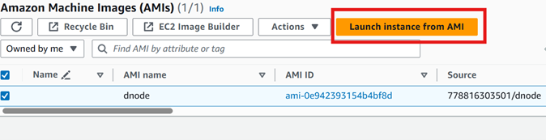 Once the image is created, create instances (3) from that image wih following configuration
After the successful creation you will get something like this: 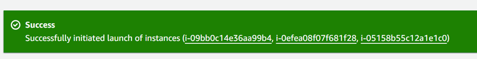 And the Instances tab will look like this. 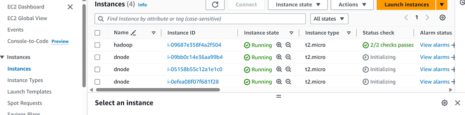 Rename the initial instance as nnode and other dnode to dnode1, dnode2 and dnode3 for easy navigation and configuration. Note the Public DNS of all the datanodes created.
Specific Configuration for NameNode
For this SSH into the namenode.
Update the MapRed Properties
The mapred-site.xml needs to be edited. Edit the following file: /server/hadoop-2.7.3/etc/hadoop/mapred-site.xml so that the final configuration should look like this:
If you do not have the file make a copy from the template using cp ~/server/hadoop-2.7.3/etc/hadoop/mapred-site.xml.template ~/server/hadoop-2.7.3/etc/hadoop/mapred-site.xml
<configuration>
<property>
<name>mapreduce.jobtracker.address</name>
<value><nnode></value>
</property>
<property>
<name>mapreduce.framework.name</name>
<value>yarn</value>
</property>
</configuration>Update Yarn Properties
Edit the following file: /server/hadoop-2.7.3/etc/hadoop/yarn-site.xml so that the final configuration should look like this:
<configuration>
<property>
<name>yarn.nodemanager.aux-services</name>
<value>mapreduce_shuffle</value>
</property>
<property>
<name>yarn.nodemanager.aux-services.mapreduce_shuffle.class</name>
<value>org.apache.hadoop.mapred.ShuffleHandler</value>
</property>
<property>
<name>yarn.resourcemanager.hostname</name>
<value><nnode></value>
</property>
</configuration>Setup Master and Slaves
On the NameNode, create ~/server/hadoop-2.7.3/etc/hadoop/masters (if not created) and add the Public DNS of the name node. nano masters (to create a new file) Paste the DNS then save the file Also replace all content in ~/server/hadoop-2.7.3/etc/hadoop/slaves with (replace each of <dnode1>, etc with the appropriate DateNode’s public DNS):
Updated HDFS Properties
edit the following file: /server/hadoop-2.7.3/etc/hadoop/hdfs-site.xml from
<name>dfs.datanode.name.dir<name><name>dfs.namenode.name.dir<name>SSH to all datanode
Once the configuration is complete it is required to ssh into all the datanode instances from the namenode. This is also performed to validate if the password less operation works.
Setting up the NameNode
Before we start the cluster it is required to format the HDFS file system for the namenode.
cd ~/server
./hadoop-2.7.3/bin/hdfs namenode -format
If every configuration is correct, you will get something like this.
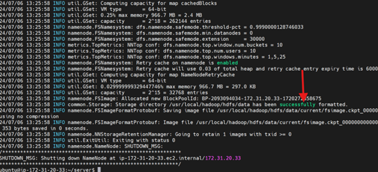To set up the NameNode and start the hadoop cluster, do the following:
./hadoop-2.7.3/sbin/start-dfs.sh
./hadoop-2.7.3/sbin/start-yarn.sh
./hadoop-2.7.3/sbin/mr-jobhistory-daemon.sh start historyserver
Check the services
jpsSetting up the DataNode
On all the DataNodes, do the following:
cd ~/server/hadoop-2.7.3/sbin
./hadoop-daemon.sh --script hdfs start datanodeVerification
You can verify the Hadoop cluster setup by accessing the web interface of the NameNode.
HTTP Configuration
In the EC2 instance under the security open the security group wizard. 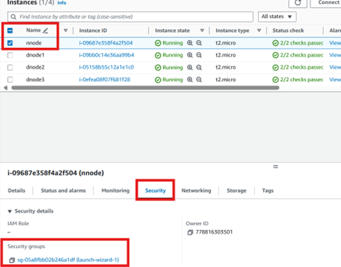
Edit the Inbound Rules by adding a new rule as follows and save it.
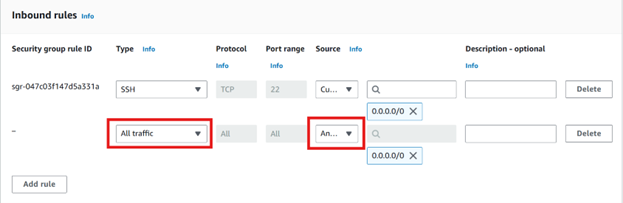Open a browser and go to http://<Public_DNS>:50070. You should see the NameNode web interface showing the status of the cluster.
Conclusion
Congratulations! You have successfully set up a Hadoop cluster on AWS with a single NameNode and three DataNodes. This setup can be used for processing large datasets in a distributed manner, leveraging the power of Hadoop on the cloud.
Summary
This article explains how to set up an Apache Hadoop cluster on Amazon EC2. Beginning with standard Ubuntu 24.04 LTS instances, it covers the installation of Java and Apache Hadoop. A base instance is configured for both the NameNode and DataNodes, and then replicated to create three DataNodes. The guide also details the configuration of Hadoop components such as HDFS, SSH, MapReduce, and YARN according to their roles. Finally, it includes steps to configure network settings for monitoring the cluster via the web UI.
Acknowledgement
Special thanks to Asst. Professor Basanta Joshi,Ph.D., for his invaluable guidance and knowledge sharing. Many thanks to the author of the article Setting up an Apache Hadoop Cluster on AWS EC2 , which significantly contributed to this work. Additional thanks to TutorialsPoint for their resources. Lastly, gratitude to the Institute of Engineering for providing the AWS Academy Data Engineering Courses free tier.